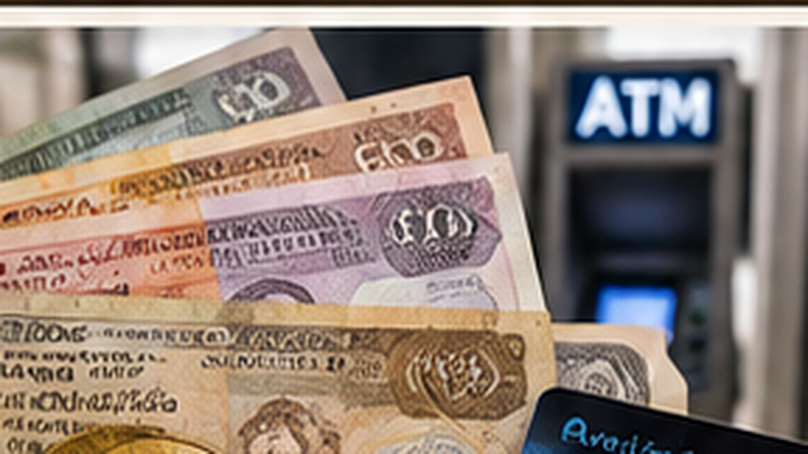

01
Bargeldreserve
Für kleinere Ausgaben und abgelegenere Regionen ausreichend Bargeld einplanen.
Mit einer Kombination aus Bargeldreserve, geeigneter Karte und gutem Überblick über Ausgaben sind Sie unterwegs flexibler.

Übersichtlich, praktisch und auf die Reisevorbereitung ausgerichtet.
Für kleinere Ausgaben und abgelegenere Regionen ausreichend Bargeld einplanen.
Kartenzahlung ist je nach Ort und Anbieter unterschiedlich verfügbar.
Geldautomaten sind eher in größeren Städten und zentralen Orten zu erwarten.
Nicht das gesamte Bargeld und alle Karten an einem Ort aufbewahren.
Mit einer Kombination aus Bargeldreserve, geeigneter Karte und gutem Überblick über Ausgaben sind Sie unterwegs flexibler.
Ein sinnvoller Ablauf hilft, wichtige Punkte rechtzeitig zu erledigen.
Karten, Limits und Reserve zusammenstellen.
Gelegenheiten für Bargeldabhebung vorausschauend nutzen.
Bargeld und Karten auf mehrere sichere Orte verteilen.
Wir erläutern Ihnen, welche Leistungen in Ihrer Reise enthalten sind und welche Ausgaben Sie vor Ort einplanen sollten.